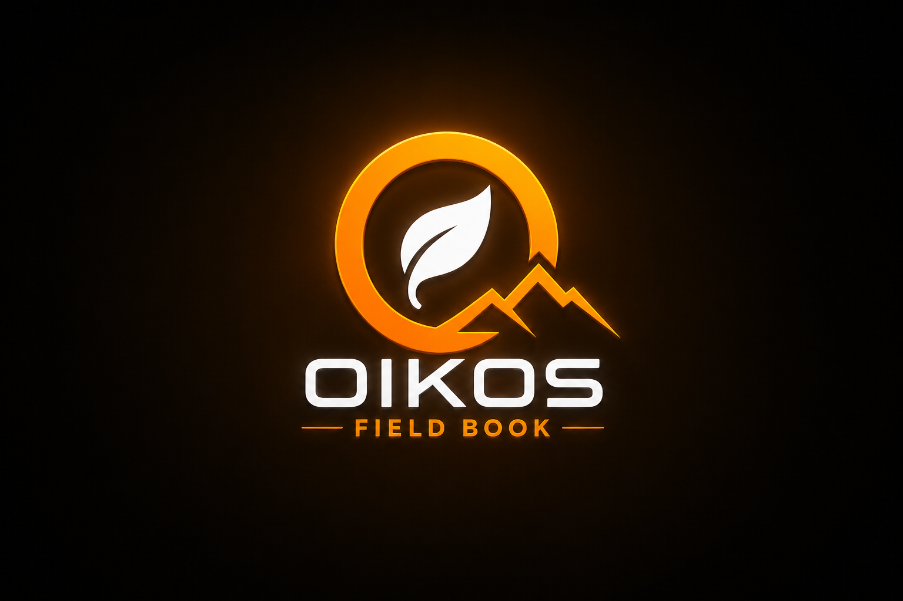
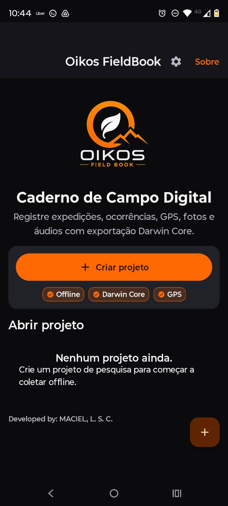
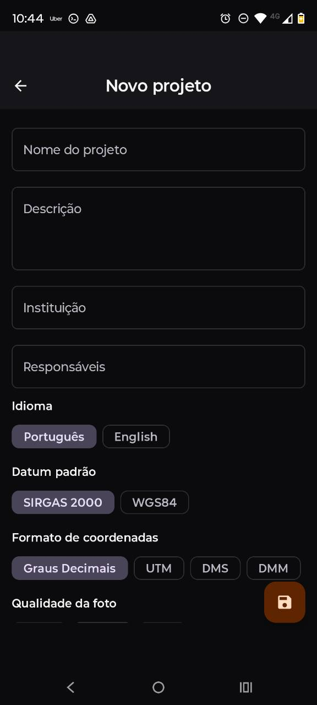
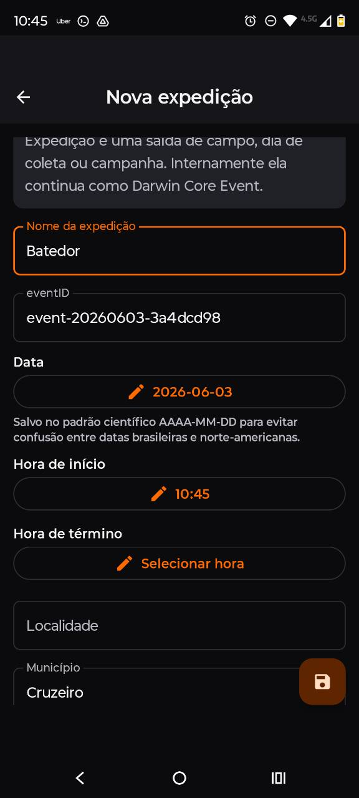
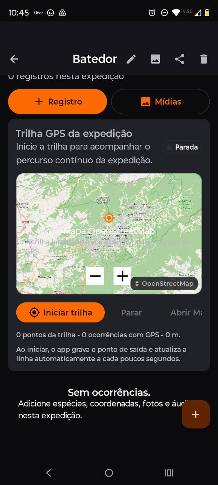
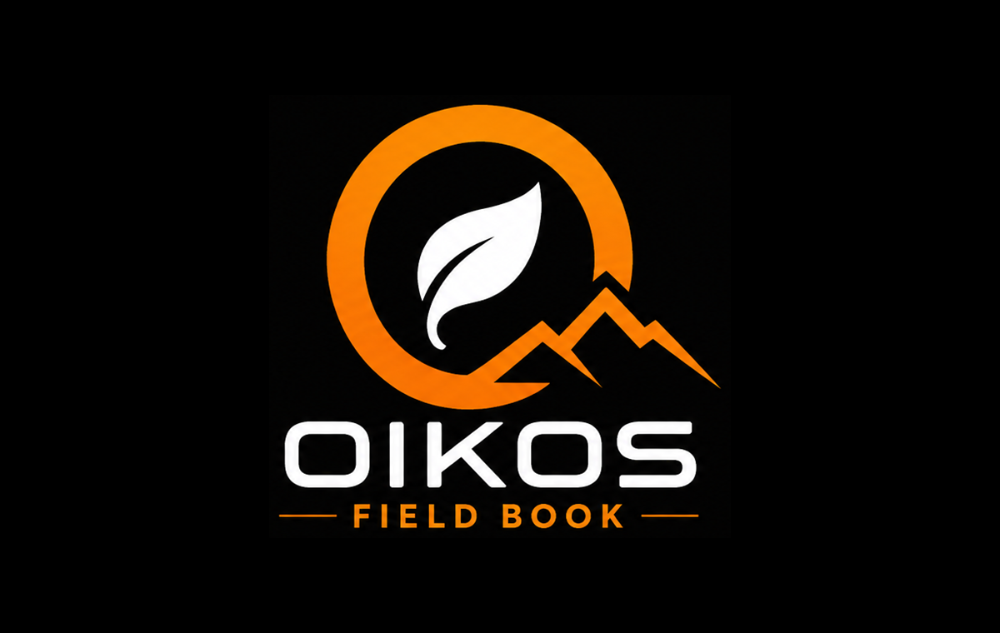
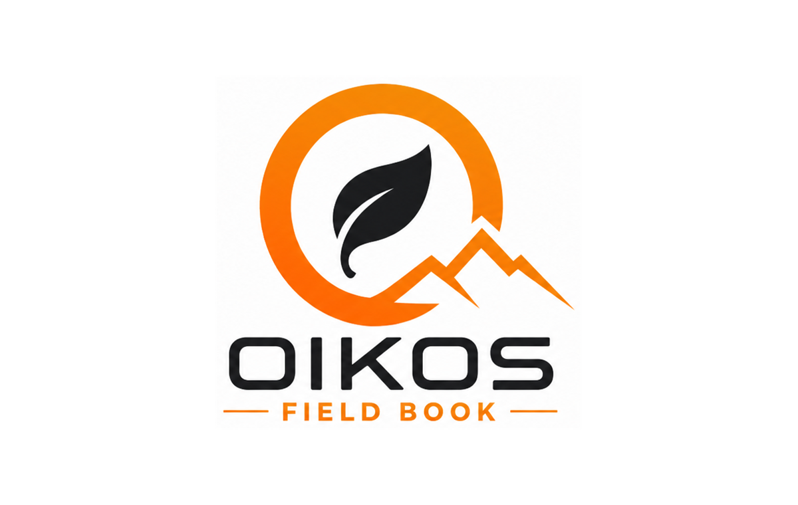

Criar projeto
Define idioma, datum, formato de coordenadas, qualidade de foto e grupos de campos.
Ferramenta científica gratuita · Versão 0.1.2
Caderno de campo digital para biodiversidade, criado para registrar expedições, ocorrências, coordenadas, trilhas GPS, fotos e áudios em um fluxo offline, com exportação científica compatível com Darwin Core.

De pesquisador para pesquisador
O Oikos FieldBook foi pensado para reduzir retrabalho em inventários, monitoramentos e expedições científicas. A coleta deixa de depender de anotações dispersas, nomes de arquivos improvisados e planilhas reconstruídas depois da saída de campo.
O pesquisador usa campos amigáveis na interface, enquanto a estrutura interna preserva termos padronizados como eventID, occurrenceID, decimalLatitude, decimalLongitude e associatedMedia.
Como funciona
Define idioma, datum, formato de coordenadas, qualidade de foto e grupos de campos.
Ativa módulos de fauna, flora, funga, ecologia, identificação e observações complementares.
A saída de campo vira um evento estruturado, com data, horário, localidade e identificadores.
Adiciona táxon, GPS, ambiente, mídia, notas, identificador e evidências associadas.
Registra o percurso em segundo plano, com pontos GPS ligados à expedição.
Gera planilhas, JSON, GeoJSON e ZIP completo com mídias e manifesto.
Funções principais
Organiza a pesquisa em projetos, expedições e ocorrências, mantendo a expedição mapeada internamente como evento Darwin Core.
Suporta SIRGAS 2000 e WGS84, graus decimais, DMS, DMM e UTM, preservando latitude e longitude em graus decimais.
Registra o caminho da expedição, mostra a linha no mapa e mantém vínculo entre percurso, pontos e ocorrências.
Permite fotografar, anexar imagens, gravar WAV por padrão e manter MP3 como alternativa, sem salvar mídia dentro do SQLite.
Gera CSV, XLSX, JSON, GeoJSON e ZIP completo com README, manifest.json e tabela de mídias.
Funciona offline, usa alto contraste, botões grandes, tema escuro por padrão e interface pensada para celular.
Telas reais
As telas reais mostram a proposta central do aplicativo: interface escura, botões grandes, fluxo offline e organização científica sem perder usabilidade em campo.

Entrada limpa com chamada principal, criação de projeto e indicadores rápidos de modo offline, Darwin Core e GPS.

Configuração inicial da coleta com idioma, datum, coordenadas e qualidade de foto.

Evento de campo com identificador, data padronizada, horário, localidade e município.
Fotos e áudios vinculados ao projeto, expedição, occurrenceID, eventID e associatedMedia.

Mapa com percurso da expedição, estado da trilha, pontos GPS e base OpenStreetMap.
Identidade visual
#0B0B0D#16161A#202027#2E2E36#F9F7F2#B8B8C3#FF6A00#FFB066#FAF9F6#FFFFFF#1C1C22#E2E2E2Logo


Dados prontos para análise
Toda mídia exportada mantém relação clara com projectID, eventID, occurrenceID e mediaID. Na tabela principal, associatedMedia aponta para fotos e áudios por caminho relativo.
Assinatura científica
Ferramenta científica gratuita desenvolvida por Luan da Silva Cortes Maciel (MACIEL, L. S. C.), mestrando no Instituto de Pesquisa Jardim Botânico do Rio de Janeiro, sob orientação de Leandro Freitas e coorientação de Matheus de Toledo Moroti.
Aplicativo vinculado à pesquisa “Levantamento e Interações Ecológicas entre Anuros e Bromélias na RPPN Gigante do Itaguaré”.
Como citar
MACIEL, L. S. C. (2026). Oikos FieldBook (0.1.2). Zenodo. https://doi.org/10.5281/zenodo.20526747